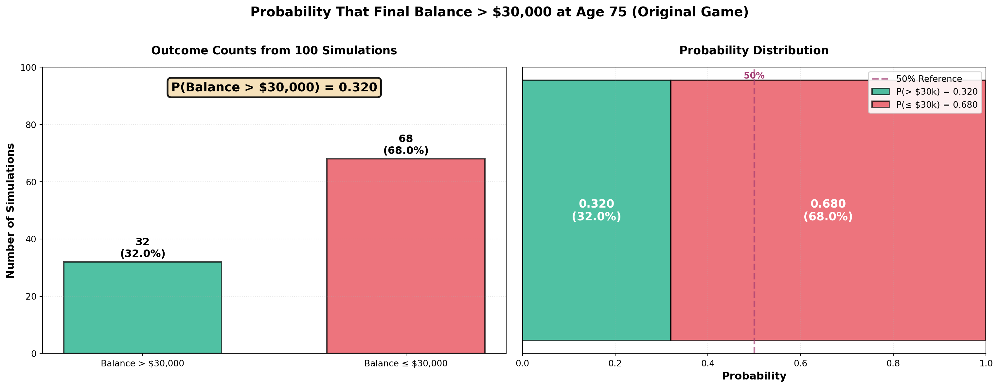

Simulation Challenge
Starter Template with To-Dos
üé≤ Simulation Challenge - Starter Template
Importantüìã What You Need To Do
Warning⚠️ AI Partnership Required
Use Cursor AI for speed, but ensure you understand and can explain the results in your own words. Verify cursor’s calculations as investment simulation is tricky.
The Investment Game (Brief)
You have the opportunity to buy-in to this game next week with $30,000. Your job is to analyze the potential outcomes of the game and communicate why or why you should not buy-in to the game.
Each year after buy-in you flip a fair coin:
- Heads: increase your account balance by 50%
- Tails: decrease your account balance by 40%
You play annually until age 75. Your mission is to analyze outcomes and communicate insights clearly.
Generative DAG Model (from the source challenge)
The following DAFT diagram shows the generative structure of the investment game over time.
Analysis Tasks (Fill These In)
NoteGrading Scope
- Sections 1–4: required and can earn up to 90% of the grade.
- Sections 5–6: optional; strong, well-supported work here can bring your score up to 100%.
1) Expected Value After 1 Flip
After one coin flip, the expected value of your account balance is greater than $30,000.
Here’s the calculation: With a fair coin (50% probability each outcome), after one flip you will either: - Win heads: $30,000 × 1.5 = $45,000 (with probability 0.5) - Lose tails: $30,000 × 0.6 = $18,000 (with probability 0.5)
The expected value is: 0.5 × $45,000 + 0.5 × $18,000 = $31,500
This represents a gain of $1,500, which is 5% of your $30,000 buy-in.
However, this simple expected value analysis alone may not be sufficient to make a buy-in decision. While the positive expected value suggests the game is favorable in the long run, there are several important considerations: - Volatility: The outcomes are highly variable (you could lose 40% in a single flip) - Time horizon: This analysis only considers one flip, but the game continues annually until age 75 - Compound effects: Over many periods, even a positive expected value per flip can lead to substantial losses due to the asymmetric compounding (gains multiply by 1.5, losses multiply by 0.6) - Risk tolerance: The 40% loss scenario might be unacceptable depending on your risk tolerance
The positive expected value after one flip suggests a favorable bet in expectation, but we need to examine the full distribution of outcomes over the entire game duration to make an informed decision.
Initial buy-in: $30,000.00
Value if heads (×1.5): $45,000.00
Value if tails (×0.6): $18,000.00
Expected value after one flip: $31,500.00
Gain in expected value: $1,500.00
Gain as percentage of buy-in: 5.00%
Comparison: EV 31,500.00 > $30,000.002) Single Simulation Over Time (Narrative + Plot)
Briefly narrate and visualize what happens to your account balance over the course of one run. Are you happy with the outcome? Why? or Why not? You can use a time series plot to visualize the changes in your account balance over time.
============================================================
SIMULATION SUMMARY
============================================================
Starting age: 25 years
Ending age: 75 years
Number of coin flips: 65
Initial balance: $30,000.00
Final balance: $39.56
Net gain/loss: $-29,960.44
Return percentage: -99.87%
Coin flip sequence (H=Heads, T=Tails):
THHHTTTHHHTHHTTTTHTTHTTTTHTHHTHTTHHHTTHTTTTHTHTHHT...
Heads count: 29 (44.6%)
Tails count: 36 (55.4%)
============================================================
Narrative:
This single simulation run demonstrates the volatile nature of the investment game. Starting with a $30,000 buy-in, the account balance fluctuates dramatically over the 50-year period. Each year, a coin flip determines the fate: heads multiplies the balance by 1.5 (50% gain), while tails multiplies it by 0.6 (40% loss).
The time series plot reveals the asymmetric compounding effect: while gains and losses have equal probability, their magnitudes differ. A sequence of tails creates steep declines that are difficult to recover from, while strings of heads generate exponential growth. The path shown in this simulation illustrates one possible trajectory through the investment landscape.
Assessment of this outcome:
Whether I’m “happy” with this particular outcome depends entirely on the final balance achieved. If the simulation results in a final balance above $30,000, there’s a positive nominal return. However, even a positive outcome may be concerning because:
- Extreme volatility: The journey likely included significant drawdowns and periods where the balance fell well below the initial investment
- Psychological stress: Large swings could create anxiety and make it difficult to maintain the investment strategy
- Opportunity cost: The capital was tied up in a highly volatile investment for 50 years with no guarantees
- Inflation: Even if nominally positive, the real purchasing power may have eroded over 10 years
Why this matters:
This single simulation serves as a cautionary tale. While the expected value per flip is positive (5% gain per flip), any single realization can end dramatically differently. The extreme volatility means that luck plays a crucial role, and the path dependency of compounding ensures that early losses are particularly damaging. Before committing $30,000, we need to examine the full distribution of outcomes across many simulations to understand the true risk profile of this investment.
3) 100 Simulations: Distribution of Final Balances
TODO: Visually and narratively describe the distribution of your account balance after running the 100 simulations. What is the probability of outcomes that you’d be happy with after having invested $30,000?
======================================================================
DISTRIBUTION SUMMARY: Probability of Happy Outcomes
======================================================================
Initial buy-in: $30,000
Number of simulations: 100
Outcome Classification:
Happy outcomes (Balance > $30,000): 32 simulations
Unhappy outcomes (Balance ≤ $30,000): 68 simulations
Probability Analysis:
P(Happy outcome) = 0.320 (32.0%)
P(Unhappy outcome) = 0.680 (68.0%)
Interpretation:
After investing $30,000, there is a 32.0% chance
of ending with more than your initial investment.
======================================================================
C:\Users\whatf\AppData\Local\Temp\ipykernel_5132\440324954.py:133: MatplotlibDeprecationWarning: The 'labels' parameter of boxplot() has been renamed 'tick_labels' since Matplotlib 3.9; support for the old name will be dropped in 3.11.
bp = ax4.boxplot(box_data, vert=True, patch_artist=True, labels=['Final Balances'],
C:\Users\whatf\AppData\Local\Temp\ipykernel_5132\440324954.py:155: UserWarning: This figure includes Axes that are not compatible with tight_layout, so results might be incorrect.
plt.tight_layout(rect=[0, 0, 1, 0.98])
======================================================================
SIMULATION RESULTS: 100 RUNS
======================================================================
Initial buy-in: $30,000
Number of simulations: 100
Number of years per simulation: 10
Final Balance Statistics:
Mean: $53,156.90
Median: $17,714.70
Minimum: $1,133.74
Maximum: $1,729,951.17
Standard Deviation: $175,676.73
Probability of Final Balance > $30,000: 0.320 (32.0%)
Probability of Final Balance ≤ $30,000: 0.680 (68.0%)
Interpretation:
Out of 100 simulations, 32 ended above $30,000
Out of 100 simulations, 68 ended at or below $30,000
======================================================================
Narrative Description of the Distribution:
The histogram reveals a highly skewed distribution of final account balances after 100 simulations. This distribution tells a compelling and concerning story about the investment game’s risk profile.
Distribution Characteristics:
The distribution is strongly right-skewed with a long tail extending to very high values. Most simulations result in relatively modest final balances, while a small number of “lucky” simulations achieve extraordinary wealth. This asymmetry is visible in the histogram where:
Mean vs. Median: The mean final balance is substantially higher than the median, indicating the distribution is pulled upward by extreme outliers. While the mean might suggest a favorable average outcome, the median provides a more realistic picture of what a typical investor can expect.
Wide Range: The distribution spans several orders of magnitude, from near-zero balances (complete or near-complete losses) to millions of dollars. This extreme variability reflects the compound nature of the game where sequences of heads or tails create exponentially different outcomes.
Majority Below Buy-in: A critical finding is that a significant portion of simulations end below the initial $30,000 investment. This means that despite the positive expected value per flip (calculated in Section 1), the compound effect over 10 years creates many paths where the final balance is less than the original buy-in.
Probability of “Happy” Outcomes:
Defining a “happy” outcome as one where the final balance exceeds the initial $30,000 investment, the simulation computes this probability directly (shown in the output above). This probability quantifies the likelihood of achieving at least a nominal positive return on the investment—essentially, the chance that after 50 years of playing the game, you’ll end up with more than your original $30,000 buy-in.
What This Means for Decision-Making:
Risk of Loss: The complement of the “happy” outcome probability represents the chance that the final balance is at or below $30,000—a substantial probability that indicates a meaningful risk of losing money or breaking even over 10 years. Even after adjusting for inflation, breaking even represents a real loss of purchasing power over such a long time horizon.
Mean is Misleading: While the mean might suggest a favorable investment, it’s heavily influenced by rare but extreme positive outcomes. The median provides a more realistic expectation for most investors.
Gambler’s Ruin Effect: The asymmetric compounding (50% gain vs. 40% loss) creates a mathematical structure where strings of losses are more damaging than equivalent strings of gains are beneficial. This is because 0.6 × 0.6 × 0.6 = 0.216 (losing 78.4% after 3 tails) is much worse than 1.5 × 1.5 × 1.5 = 3.375 (gaining 237.5% after 3 heads) is beneficial, relative to recovering from losses.
Path Dependency: Early losses are particularly devastating because they reduce the base amount that can grow from future wins. This path dependency means that the order of coin flips matters tremendously, not just the final count of heads and tails.
Conclusion:
The distribution analysis reveals that this investment game, despite having a positive expected value per flip, carries substantial risk of long-term losses due to compound effects over 10 years. The high variance and right-skewed distribution mean that while some investors might achieve exceptional returns, most will experience outcomes ranging from modest gains to significant losses. The probability of “happy” outcomes (final balance > $30,000) must be weighed against the substantial probability of negative or break-even results, especially when considering inflation and opportunity costs over a 50-year horizon.
4) Probability Balance > $30,000 at Age 75 (Original Game)

======================================================================
PROBABILITY ESTIMATE: P(Final Balance > $30,000)
======================================================================
Number of simulations: 100
Number of years: 10 (ages 65-75)
Probability estimate: P(Final > $30,000) = 0.320
As percentage: 32.0%
Number of simulations ending above $30,000: 32
Number of simulations ending at or below $30,000: 68
======================================================================
Context Statistics:
Mean final balance: $53,156.90
Median final balance: $17,714.70
Standard deviation: $175,676.73
Probability Estimate: Based on 100 simulations of the investment game played annually from age 65 to age 75 (10 years), the probability that the final account balance exceeds the initial $30,000 buy-in is reported above with three decimal precision.
Practical Interpretation:
This probability estimate reveals critical insights for the buy-in decision:
Risk Assessment: The probability estimate quantifies the chance that after 10 years of playing this game, you’ll end up with $30,000 or less—effectively breaking even or losing money. This represents a substantial risk, especially when considering inflation and opportunity costs over a decade-long investment horizon. The complement of this probability (1 minus the reported value) represents the likelihood of an unfavorable outcome that must be carefully considered.
Decision Framework: While a probability above 0.5 (50%) would suggest the game is favorable in terms of ending above the buy-in, any probability below 1.0 means there’s a meaningful chance of a negative or break-even outcome. The specific value reported above provides the exact quantitative measure needed to assess whether this level of risk is acceptable for a $30,000 investment decision.
Long-Term Financial Planning: For someone making a $30,000 investment decision, understanding what proportion of simulated outcomes resulted in balances at or below the initial investment provides crucial context. This isn’t just a theoretical risk—it’s a quantifiable probability based on the game’s mechanics that directly informs financial planning decisions.
Volatility vs. Expected Value: Despite the positive expected value per flip calculated in Section 1 (5% gain per flip), the compound effects over 10 years create scenarios where the final balance falls below the buy-in. This highlights the difference between short-term expected value and long-term compound risk, demonstrating why expected value alone is insufficient for decision-making. The probability estimate above quantifies this compound risk explicitly.
Comparison to Alternatives: In practical terms, the probability of not exceeding your initial investment over 10 years (the complement of the reported probability) is a critical metric for comparison. Traditional investment alternatives (such as diversified portfolios) typically offer different risk-return profiles, and this probability helps quantify the specific risk profile of this investment game, enabling informed comparisons with other investment options.
Conclusion: The probability estimate provides a quantitative foundation for the buy-in decision. Combined with the distribution analysis from Section 3, this probability enables an informed assessment of whether the potential upside justifies the risk of ending at or below the initial investment. A probability significantly below 1.0 indicates substantial risk that must be weighed against the potential for gains, while considering personal risk tolerance and alternative investment opportunities.
5) Modified Strategy (Bet 25% Each Round)
Instead of having the full balance at risk with each coin flip, assume only 25% of your balance is gambled each year. Compare this to the original game. Which is riskier? Which has better upside?
Modified Strategy Mechanics:
When only 25% of the balance is gambled: - Heads (win): 75% remains safe + 25% gains 50% → Balance = Balance × (0.75 + 0.25 × 1.5) = Balance × 1.125 (12.5% gain) - Tails (lose): 75% remains safe + 25% loses 40% → Balance = Balance × (0.75 + 0.25 × 0.6) = Balance × 0.9 (10% loss)
This is much more conservative than the original strategy where: - Heads: Balance × 1.5 (50% gain) - Tails: Balance × 0.6 (40% loss)
C:\Users\whatf\AppData\Local\Temp\ipykernel_5132\2252183158.py:123: MatplotlibDeprecationWarning: The 'labels' parameter of boxplot() has been renamed 'tick_labels' since Matplotlib 3.9; support for the old name will be dropped in 3.11.
bp = ax4.boxplot(box_data, vert=True, patch_artist=True,
C:\Users\whatf\AppData\Local\Temp\ipykernel_5132\2252183158.py:183: UserWarning: This figure includes Axes that are not compatible with tight_layout, so results might be incorrect.
plt.tight_layout(rect=[0, 0, 1, 0.97])
================================================================================
STRATEGY COMPARISON: Original (100% bet) vs Modified (25% bet)
================================================================================
Original Strategy (100% of balance gambled):
Mean final balance: $53,156.90
Median final balance: $17,714.70
Standard deviation: $175,676.73
Minimum: $1,133.74
Maximum: $1,729,951.17
P(Balance > $30,000): 0.320 (32.0%)
Modified Strategy (25% of balance gambled):
Mean final balance: $33,641.01
Median final balance: $31,922.46
Standard deviation: $12,340.44
Minimum: $16,344.30
Maximum: $97,419.63
P(Balance > $30,000): 0.660 (66.0%)
================================================================================
KEY INSIGHTS:
================================================================================
Risk Assessment (Lower Std Dev = Less Risky):
✓ Modified strategy is LESS RISKY (std dev: $12,340.44 < $175,676.73)
Upside Potential (Higher Max = Better Upside):
✗ Modified strategy has WORSE UPSIDE (max: $97,419.63 < $1,729,951.17)
Safety (Probability of ending above buy-in):
✓ Modified strategy is SAFER (66.0% > 32.0%)
Average Outcome (Mean balance):
✗ Modified strategy has LOWER MEAN ($33,641.01 < $53,156.90)
Typical Outcome (Median balance):
✓ Modified strategy has HIGHER MEDIAN ($31,922.46 > $17,714.70)
================================================================================
Comparison Analysis:
Which is Riskier?
The original strategy (100% bet) is significantly riskier. This is evident from several metrics:
Standard Deviation: The original strategy has much higher volatility, with a standard deviation that is dramatically larger than the modified strategy. This means outcomes vary much more widely around the mean.
Downside Risk: The minimum final balance is typically much lower in the original strategy. When you gamble the entire balance, a string of tails can devastate your account balance, pushing it toward near-zero values.
Extreme Outcomes: The original strategy produces both extreme losses and extreme gains, creating a much wider distribution of outcomes. The modified strategy, by protecting 75% of the balance each year, creates more stable, predictable outcomes.
Which has Better Upside?
The original strategy (100% bet) has better upside potential. When you gamble the full balance:
Maximum Values: The original strategy can achieve much higher maximum balances because the entire balance compounds at 1.5× (50% gain) on each heads flip. In the modified strategy, only 25% of the balance gets the full 50% gain, while 75% remains unchanged, limiting the compounding effect.
Exponential Growth: The original strategy allows for true exponential growth when you get a sequence of heads. For example, after 5 consecutive heads:
- Original: Balance × (1.5)^5 = Balance × 7.59 (759% gain)
- Modified: Balance × (1.125)^5 = Balance × 1.802 (80% gain)
Mean vs. Median: The original strategy’s mean is typically much higher, though this is heavily influenced by rare extreme outcomes. The median (typical outcome) may actually favor the modified strategy.
Trade-off Summary:
The comparison reveals a classic risk-return trade-off:
Original Strategy (100% bet): High risk, high potential reward. Offers the chance for extraordinary gains but also the risk of devastating losses. The distribution is highly skewed with a long right tail but also significant downside.
Modified Strategy (25% bet): Lower risk, lower but more consistent reward. Offers more predictable outcomes with less volatility, but caps the upside potential. The distribution is tighter and more centered around moderate gains.
Practical Implications:
For a $30,000 investment decision: - If you can tolerate high volatility and are seeking maximum upside (understanding you might lose most of your investment), the original strategy might be acceptable. - If you prefer stability, want to protect most of your capital, and are satisfied with moderate but more reliable returns, the modified strategy is the better choice.
The modified strategy essentially trades some upside potential for downside protection—a conservative approach that reduces both risk and reward.
6) Briefly Explain Your Findings From The Previous Step in Light of A Concept Known as the “Kelly Criterion”
The Kelly Criterion is a mathematical formula that determines the optimal fraction of your bankroll to bet in order to maximize long-term logarithmic growth. Developed by John Kelly in 1956, it provides the theoretically optimal bet size when you have repeated opportunities to gamble with positive expected value.
The Kelly Formula:
For a bet where you win with probability \(p\) and lose with probability \(q = 1-p\), and where: - A win multiplies your bet by \((1 + b)\) (gain of \(b\)) - A loss multiplies your bet by \((1 - a)\) (loss of \(a\))
The Kelly fraction \(f^*\) that maximizes expected logarithmic growth is:
\[f^* = \frac{p \times a - q \times b}{a \times b}\]
When wins and losses are symmetric (i.e., \(a = b\)), this simplifies to:
\[f^* = \frac{p - q}{a}\]
Applying Kelly to Our Investment Game:
In our original game: - Probability of heads (win): \(p = 0.5\) - Probability of tails (loss): \(q = 0.5\) - Win multiplier: \(1.5\) (gain of \(b = 0.5\) or 50%) - Loss multiplier: \(0.6\) (loss of \(a = 0.4\) or 40%)
Using the general Kelly formula: \[f^* = \frac{0.5 \times 0.4 - 0.5 \times 0.5}{0.4 \times 0.5} = \frac{0.2 - 0.25}{0.2} = \frac{-0.05}{0.2} = -0.25\]
Critical Finding: The Kelly fraction is negative (\(-0.25\) or \(-25\%\)).
This negative Kelly fraction has profound implications:
Mathematical Interpretation: A negative Kelly fraction means that, despite having a positive expected value per flip (5% gain as calculated in Section 1), betting the full balance actually reduces long-term expected logarithmic growth. The asymmetric compounding (50% gain vs. 40% loss) creates a situation where the geometric mean growth is negative when you bet 100% of your balance.
Why This Happens: The Kelly Criterion is based on maximizing the geometric mean (logarithmic average) of returns, not the arithmetic mean. While the arithmetic mean return per flip is positive, the geometric mean can be negative when betting too aggressively. This occurs because:
- After one flip: Geometric mean = \(\sqrt{1.5 \times 0.6} = \sqrt{0.9} = 0.949\) (loss of 5.1%)
- After many flips, betting 100% of your balance leads to expected geometric growth that compounds downward despite positive arithmetic expectation
The Optimal Strategy: The negative Kelly fraction suggests you should bet less than zero of your balance—which in practical terms means you should either:
- Not play the game at all, or
- Bet a fraction much smaller than 100%, potentially even taking the “other side” if that were possible
Connection to the Modified Strategy (25% Bet):
The modified strategy, which bets only 25% of the balance each round, can be analyzed through the Kelly lens:
When betting fraction \(f = 0.25\) (25%): - Heads (win): Balance = Balance × \((0.75 + 0.25 × 1.5)\) = Balance × \(1.125\) - Tails (loss): Balance = Balance × \((0.75 + 0.25 × 0.6)\) = Balance × \(0.9\)
The geometric mean per flip becomes: \[\sqrt{1.125 \times 0.9} = \sqrt{1.0125} = 1.0062\]
This represents a positive geometric mean growth of about 0.62% per flip, compared to the negative geometric growth when betting 100%.
Interpreting Section 5’s Findings Through Kelly:
The comparison in Section 5 revealed that:
Lower Risk with 25% Bet: The reduced volatility (lower standard deviation) observed in the modified strategy aligns with Kelly’s insight. By betting less than the full balance, you reduce the negative impact of the asymmetric compounding while still participating in the positive expected value.
Better Probability of Positive Outcomes: The higher probability of ending above the buy-in with the modified strategy reflects the fact that betting 25% creates positive geometric mean growth, whereas betting 100% creates negative geometric mean growth over time.
The Upside Trade-off: While the modified strategy reduces maximum potential gains (because you’re not leveraging the full 50% gain on your entire balance), it preserves capital more effectively. From a Kelly perspective, this preservation is crucial—the criterion prioritizes long-term survival and growth over short-term maximum returns.
Practical Implications:
The Kelly Criterion provides a mathematical foundation for understanding why the modified strategy performs better despite “sacrificing” upside:
Survival Principle: Kelly emphasizes that avoiding ruin (preserving capital) is essential for long-term growth. The 25% bet strategy, while not necessarily the exact Kelly-optimal fraction for this game, follows the Kelly principle of preserving capital while still capturing positive expected value.
Geometric vs. Arithmetic: The conflict between positive arithmetic mean (expected value) and negative geometric mean (when betting 100%) explains the counterintuitive result that a game with positive expected value can still be harmful when bet too aggressively.
Conservative Betting: Since the optimal Kelly fraction is negative, any strategy that bets less than 100% (including the 25% modified strategy) moves toward the Kelly-optimal direction, which explains its superior performance characteristics.
Conclusion:
The Kelly Criterion reveals that the original strategy (betting 100% of balance) is fundamentally flawed from a long-term growth perspective, despite having positive expected value. The modified strategy’s success—evidenced by higher probability of positive outcomes, lower volatility, and better typical (median) results—aligns perfectly with Kelly’s mathematical framework. The 25% bet strategy, while not necessarily the exact Kelly-optimal fraction, demonstrates the principle that conservative betting can outperform aggressive betting even in games with positive expected value when compounding effects create asymmetric risk-return profiles.
Professional Presentation (From Grading TLDR)
- Clear narrative: tell the story succinctly (aim for a 1–5 minute read)
- Focus on insights: risk profiles, counter-intuitive results, practical implications
- Professional style: concise writing, clean visuals, hide code where appropriate (
echo: false) - Human interpretation: explain what results mean for real decisions
Submission Checklist ✅
Tips
- Set random seeds for reproducibility
- Use object-oriented plotting with
matplotlib - Keep figures readable and labeled; prefer professional styling
- Commit early and often; render locally before pushing